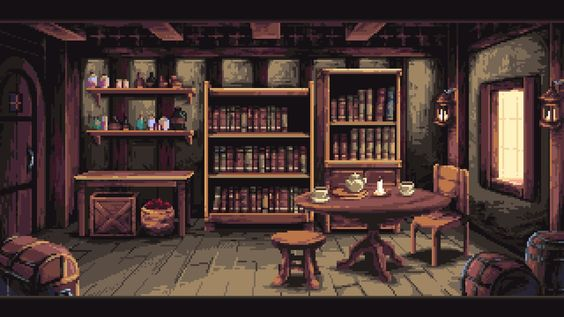

Mistérios da Mansão Esquecida

Você decide começar sua exploração pela sala da biblioteca, um ambiente
escuro e empoeirado, com prateleiras de livros que se estendem até o teto.
Enquanto você examina os títulos antigos e empoeirados, percebe que um
livro está fora do lugar, revelando um compartimento secreto na estante.
Dentro dele, você encontra um antigo quebra-cabeça de madeira. As peças
estão embaralhadas e você percebe que precisa montá-las corretamente para
abrir a passagem secreta que leva a outros cômodos da mansão. Você tem que
resolver o quebra-cabeça antes que o tempo se esgote ou algo sinistro
possa acontecer.